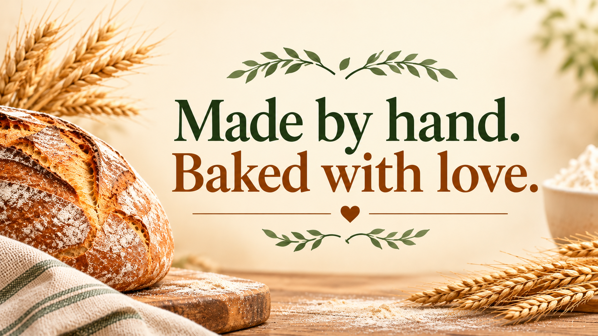

Handcrafted Sourdough.
Welcome to SOURLOVE
Made by hand. Baked with love.
SOURLOVE is an artisan bakery based in Waterlooville, Hampshire, bringing together a passion for traditional sourdough and the pleasure of homemade baking.
From naturally fermented bread to handmade savoury and sweet treats, every bake is prepared with care, using traditional techniques and a love for good food.
Made with time and care
Slow-fermented. Naturally leavened.
At SOURLOVE, we believe good baking cannot be rushed. Our sourdough is naturally leavened and slowly fermented, allowing time for flavour and character to develop.
Whether it's a traditional loaf, a savoury bake or something sweet, our aim is always the same: to make something worth sharing.